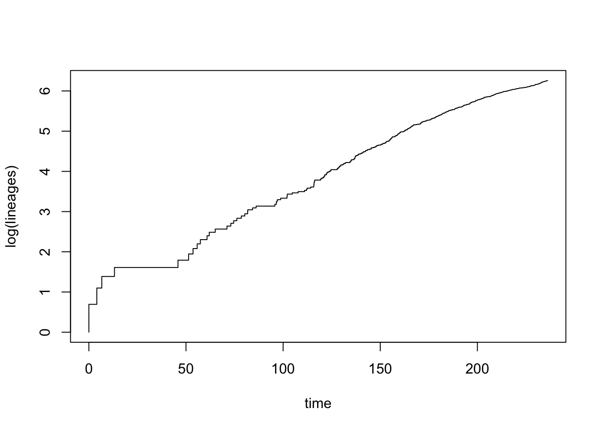
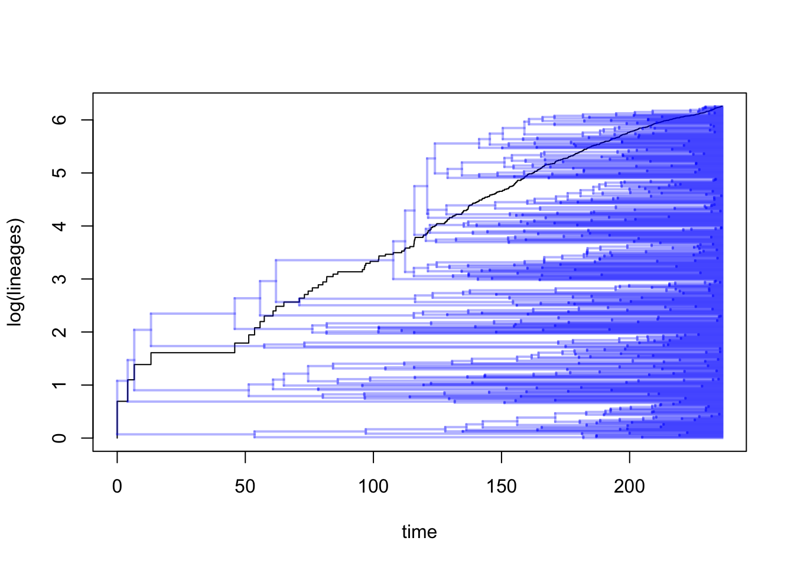
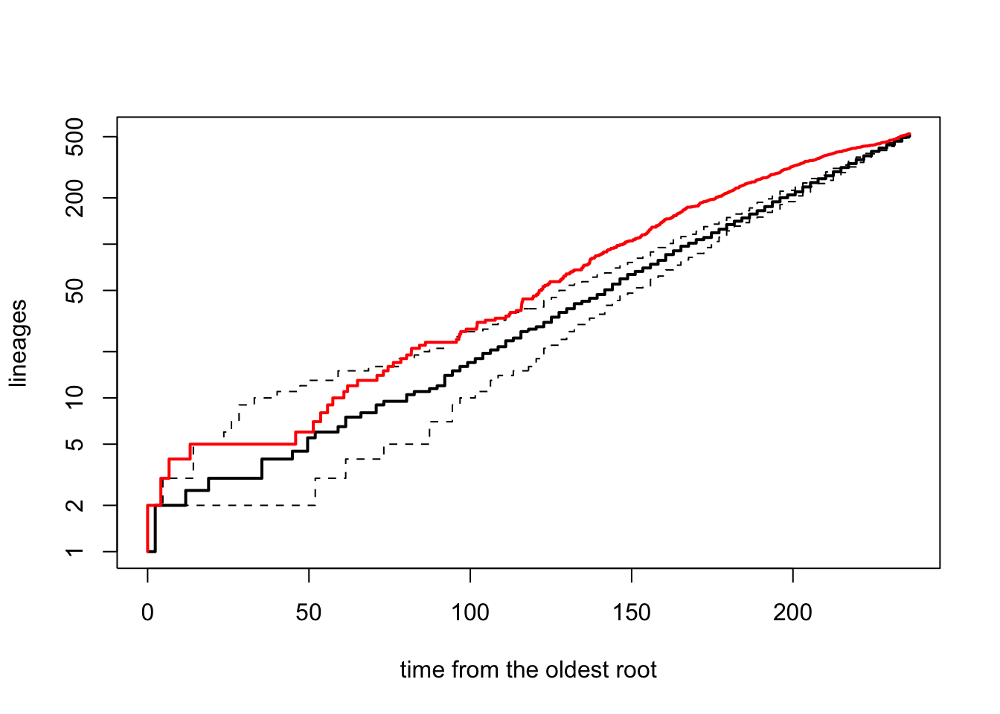
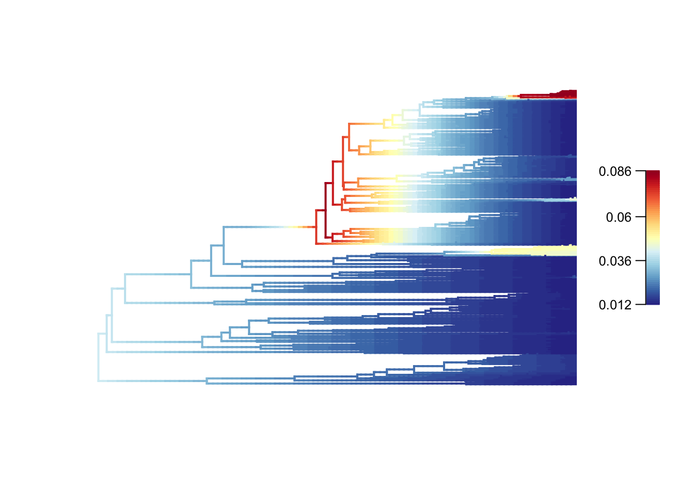
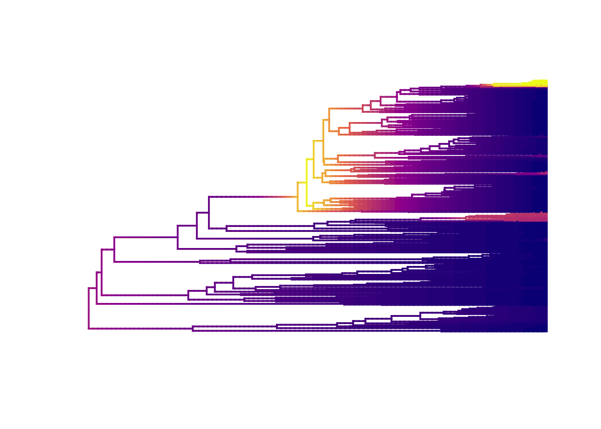
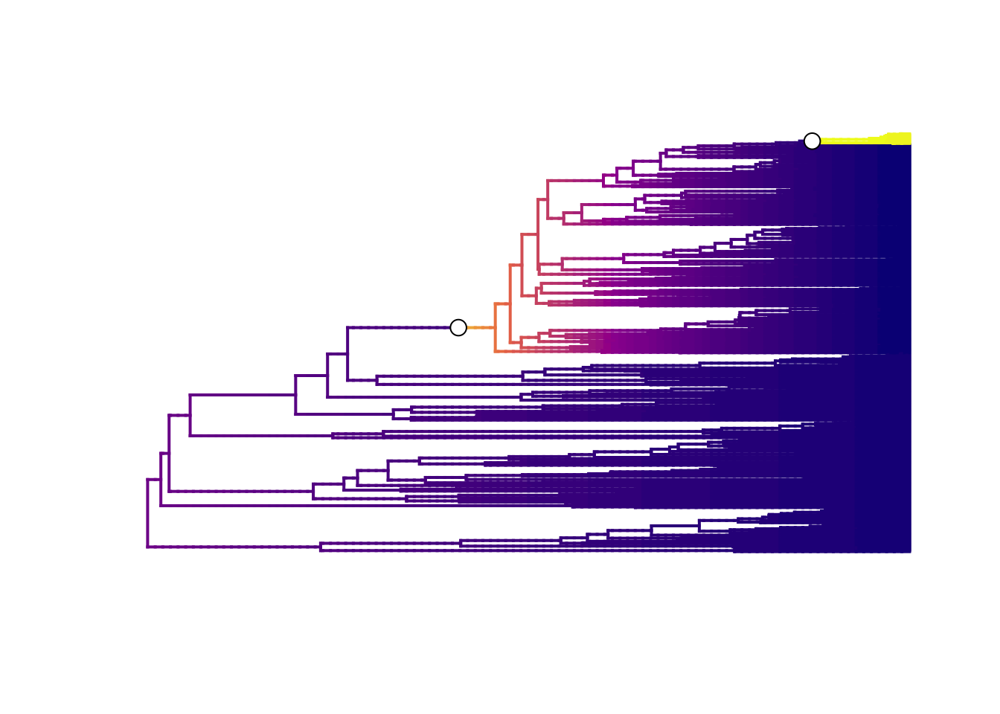
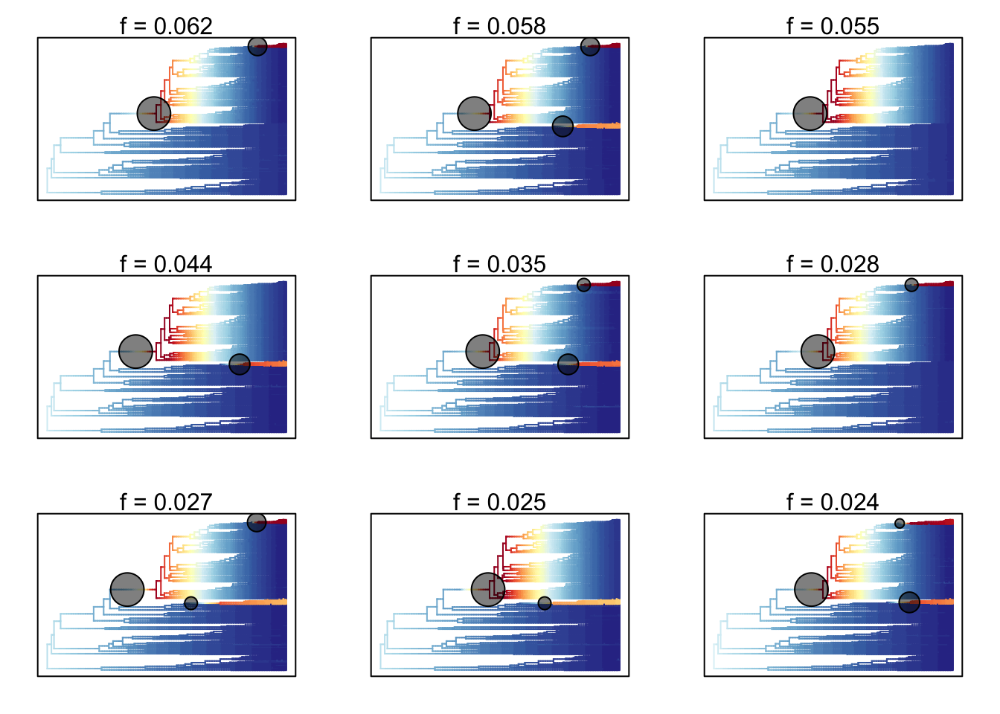
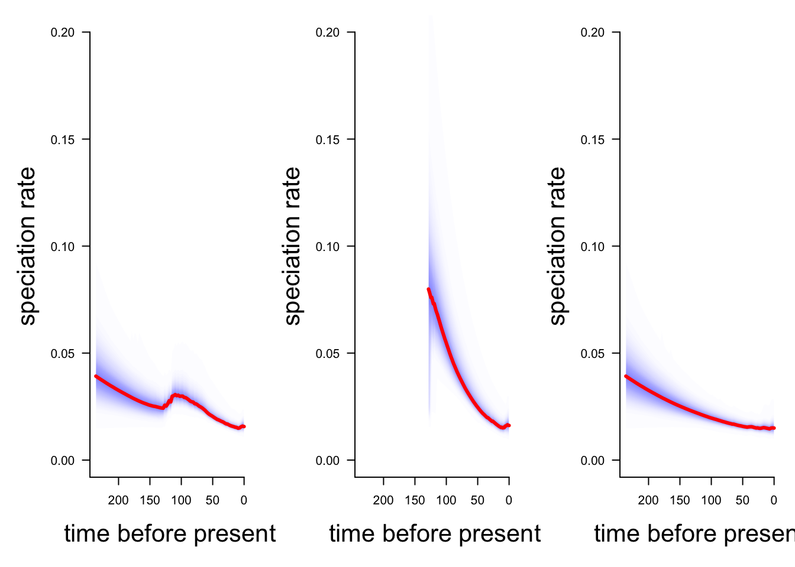
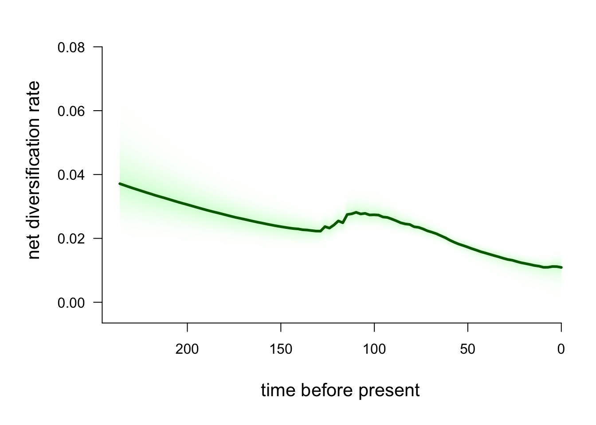
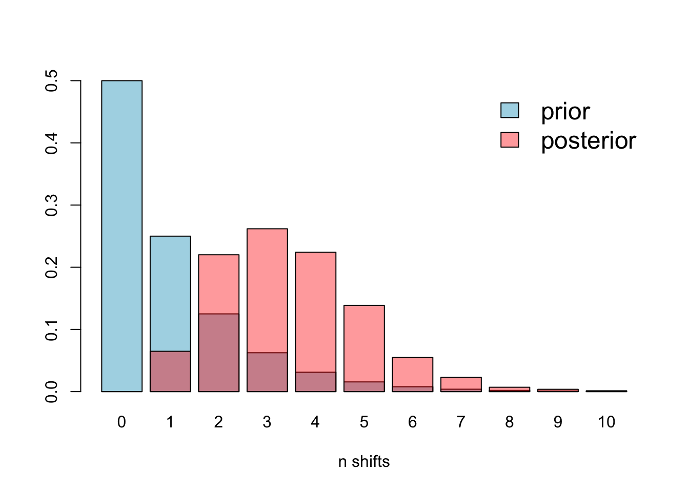

Chapter 10 Diversification rate analyses
The aims of this exercise are to learn how to use R to perform some simple diversification rate analyses, and to analyse the output from a BAMM analysis.
We will be using the diversification rates of dragonflies (Anisoptera) as an example. The tree comes from Letsch, Gottsberger, and Ware (2016b) and is available to download from Letsch, Gottsberger, and Ware (2016a). I’m only using one of their trees. If you want to see the full results check out Letsch, Gottsberger, and Ware (2016b)!
10.1 Before you start
- Open the
10-Diversification.RProjfile in the10-Diversificationfolder to open your R Project for this exercise. - Make yourself a new R script for your code.
You will also need to install the following packages:
apeBAMMtoolscodaphytoolsviridis
10.2 Preparation
To begin we need to load the packages for this practical.
# Load the packages
library(ape)
library(BAMMtools)
library(coda)
library(phytools)
library(viridis)To load the tree we will use read.tree.
# Read in the tree
dragonflytree <- read.tree("data/dragonflies-tree.tre")
# Check it loaded correctly
str(dragonflytree)## List of 4
## $ edge : int [1:1042, 1:2] 523 524 525 525 526 527 527 526 528 528 ...
## $ edge.length: num [1:1042] 53.62 128.32 54.18 5.07 17.93 ...
## $ Nnode : int 521
## $ tip.label : chr [1:522] "Hypopetalia_pestilens" "Phyllopetalia_apicalis" "Ophiopetalia_diana" "Phyllopetalia_apollo" ...
## - attr(*, "class")= chr "phylo"
## - attr(*, "order")= chr "cladewise"
Remember to check the tree is dichotomous, i.e. has no polytomies, rooted, and ultrametric.
## [1] TRUE## [1] TRUE## [1] FALSEOh dear, the tree is not ultrametric! But it looks ultrametric so we can fix this using the phytools function force.ultrametric. Note that this function is designed to deal with situations like this, but if your tree is genuinely non-ultrametric you should not use this function.
Why does a tree that looks ultrametric appear to be non-ultrametric? Most of the methods we use expect trees to be ultrametric, i.e. that all the tips line up, generally at the present day (time 0). Here we plotted the tree and it looks ultrametric, but when we check using is.ultrametric the answer returned is FALSE. What is going on? The tree is actually ultrametric, and will run in most analyses with R treating it as an ultrametric tree. The reason is.ultrametric tells us it is not ultrametric is related to rounding errors. When you save a tree file, it will save the branch lengths to a certain level of accuracy, but not always the full level of accuracy if your branch lengths have lots and lots of decimal places. When you read these trees back into R, a teeny tiny bit of the accuracy is lost which sometimes means that when R adds up the root-to-tip distances for each tip, they aren’t all exactly the same length, so therefore technically the tree is not ultrametric. For most implementations this tiny difference is not a big deal. A quick fix to this problem is to use the function force.ultrametric which essentially fudges the numbers to force the tree to be ultrametric. If your tree is genuinely non-ultrametric you should not use this function as it can introduce negative branch lengths which will break most functions you might want to use in R.
Because these analyses only require a dated phylogeny and no additional data we do not need to do any extra data cleaning steps, unless you want to only look at a particular subset of the data.
10.3 Lineage through time plots and the \(\gamma\) statistic
Drawing lineage through time (LTT) plots is very easy in R using the phytools function ltt. This function will also calculate \(\gamma\) statistic for you, but for this first example I have turned off that option using gamma = FALSE.

## Object of class "ltt" containing:
##
## (1) A phylogenetic tree with 522 tips and 521 internal
## nodes.
##
## (2) Vectors containing the number of lineages (ltt) and
## branching times (times) on the tree.This looks like diversification in dragonflies is fairly constant through most of the phylogeny, except early in the tree where there are some larger bursts of speciation. There may also be a bit of slowdown in the later stages of the phylogeny too.
If we wanted to we can also plot the tree and the LTT on the same plot as follows:

## Object of class "ltt" containing:
##
## (1) A phylogenetic tree with 522 tips and 521 internal
## nodes.
##
## (2) Vectors containing the number of lineages (ltt) and
## branching times (times) on the tree.We often also want to compare the observed LTT, to simulated LTTs assuming a pure-birth model. To do this we first need to simulate pure-birth trees that are the same age as our tree, and result in the same number of species. We can do this using the phytools function pbtree. This takes a few minutes to run… time for more cake/biscuits/tea/coffee/fresh air!
I’m only using 10 simulations nsim = 10 below to save some time. For your own analyses, nsim = 100 (or higher) is likely to be give a better answer as it will explore more options.
# Extract the number of species from the tree
n_dragonflies <- Ntip(dragonflytree)
# Extract the total age of the tree
age_dragonflies <- max(nodeHeights(dragonflytree))
# Extract the speciation rate (number of new tips per unit time), assuming it follows an exponential curve (as expected under pure-birth)
lambda_dragonflies <-(log(n_dragonflies)-log(2))/age_dragonflies
# Simulate 10 pure-birth trees using the above parameters
sim_trees <- pbtree(b = lambda_dragonflies,
n = n_dragonflies,
t = age_dragonflies, nsim = 10, quiet = TRUE, method = "direct")We then use the ltt95 function to plot the 95% confidence intervals for the LTT based on the simulated set of pure-birth trees. This shows how much our observed LTT differs from the pure-birth null model (see Primer for more details). Note that if working with Bayesian posterior distributions of trees you can also use ltt95 to plot these.
# Extract LTT plots for all simulations and plot the 95% confidence intervals
ltt95(sim_trees, log = TRUE)
# Add the original tree's LTT plot to the simulated data in red
ltt(dragonflytree, add = TRUE, col = "red", lwd = 2, gamma = FALSE, log = FALSE)
## Object of class "ltt" containing:
##
## (1) A phylogenetic tree with 522 tips and 521 internal
## nodes.
##
## (2) Vectors containing the number of lineages (ltt) and
## branching times (times) on the tree.It’s clear from this plot that the diversification of dragonflies is pretty close to the expectation under a pure-birth model.
Fun with log transforms. The function ltt95 plots log number of lineages on the y-axis, but shows the real numbers of lineages on the y axis tick labels and spreads them out, rather than the actual logged values. This is fine until we try to add our original LTT plot from ltt back onto the graph! If we do that with log = TRUE in the ltt function, the line plots in completely the wrong place! A counter-intuitive solution to this, as shown in the code above, is to use log = FALSE instead which gives the correct plot!
Finally, we can also use ltt to extract the value of the \(\gamma\) statistic (Pybus and Harvey 2000):
## Object of class "ltt" containing:
##
## (1) A phylogenetic tree with 522 tips and 521 internal
## nodes.
##
## (2) Vectors containing the number of lineages (ltt) and
## branching times (times) on the tree.
##
## (3) A value for Pybus & Harvey's "gamma" statistic of
## gamma = -5.9763, p-value = 0.\(\gamma = -5.9763\), and is significantly different from a pure-birth model of constant speciation rates (\(p = 0\), i.e. \(p < 0.001\)). This confirms our suspicions from looking at the LTT plots above that dragonfly diversification rates have significantly decreased through time.
10.4 BAMM: Bayesian Analysis of Macroevolutionary Mixtures
The BAMM part of this practical is based on the Rabosky lab’s excellent resource for using BAMM found at http://bamm-project.org/index.html. I highly recommend reading it, especially if you want to use BAMM on your own data.
BAMM (Bayesian Analysis of Macroevolutionary Mixtures; Rabosky (2014), Rabosky et al. (2014)) identifies discrete shifts in diversification rates at nodes of a tree (it can also investigate trait evolution but we will focus on diversification rates here), i.e places where diversification rates speed up or slow down. BAMM looks for rate shifts across the whole tree, so it can find one or more shifts. It does this using reversible jump Markov Chain Monte (MCMC) methods to automatically explore a vast universe of possible models (reversible jump MCMC is a special kind of MCMC algorithm; see Rabosky (2014) for details). It is biased towards simpler models (a common tactic in most evolutionary models, e.g. parsimony) so rarely results in lots of rate shifts.
For each MCMC run (generally over 1 million iterations are run in these analyses), BAMM simulates speciation and extinction along the tree, extracts the number of rate shifts, and then works out the probability of that particular combination of rate shifts occurring. The resulting BAMM outputs are a sample of all possible combinations of rates and rate shifts across all models, in proportion to their posterior probability. The posterior, or distribution of results, from BAMM will thus contain lots of different combinations of rates and rate shifts, but those that occur more often across all the models will appear more often than those that occur rarely.
In the posterior, we call each of these possible combinations distinct shift configurations. These are the most probable configuration of shifts from one model from the posterior. For example, one shift configuration may be a speed up at node 34 and a slow down at node 22 on model 10000. Each model in the posterior might have a different distinct shift configuration, or they might all be very similar. It depends on the dataset.
The number of possible distinct shift configurations is huge. Eventually, if you ran BAMM for for long enough you’d find a shift on every branch in the tree (because the branches can show shifts due to the effect of the prior alone).
We know that all the distinct shift configurations are possible but they aren’t equally probable. As mentioned above some may be common, and others rare. We need some way of summarising thousands of models, and taking this into account. There are two main approaches (and I’ll show you how to extract both from your BAMM outputs below).
Overall best shift configuration You can get this by looking at the maximum a posteriori (MAP) probability shift configuration, i.e. the one that appeared the most often in the posterior. This is a bit like using a consensus tree in phylogenetics. However, for most real datasets, the best rate shift configuration is merely one of a large number of possible rate shift configurations that have similar probabilities. So this method is not preferred (also if you’ve bothered to fit over 1 million models it seems pointless to just get one result!).
Credible shift sets An alternative way to present the results is to summarise all the distinct shift configurations. However, not all distinct shift configurations are going to be significant. Therefore, BAMM splits shifts into “important” ones that help explain the data (core shifts) and ones that are less important (or likely just due to priors) using marginal odds ratios. Specifically, BAMM computes the marginal odds ratio for each rate shift for every branch in the phylogeny. It then excludes all shifts that are unimportant using a pre-determined threshold value (usually 5). The remaining shifts are the credible shift set. These are usually reported in papers using BAMM.
BAMM is easy to run which makes it a slightly dangerous! It’s easy to run with no idea of what you are doing or why. If you want to use it on your own data you’ll need to do a lot of reading and thinking first. Below I present a very simplified version so you can get a taste of what it does.
10.5 Running BAMM
BAMM is a command line program written in C++. Analysis and visualization of the results are performed using the R package BAMMtools (Rabosky et al. 2014). We will not run BAMM itself in this practical, we will just use BAMMtools in R.
Running BAMM using C++.
BAMM is a command line program written in C++. To run BAMM, you need to download the program first, then you run it via the command line (Terminal for Macs or something like cygwin in Windows).
Your command line window will need to be opened from a folder containing the following files:
- Your phylogeny
- A control file (there is an example with the datasets)
- Your data - if doing trait evolution analyses
The control file specifies lots of information about how the BAMM model should be run, including MCMC settings (e.g. number of generations, number of chains, acceptance rates), the priors (including your expectation for the number of shifts, rates of speciation and extinction) and the initial values of the parameters. It is crucial that these settings are carefully thought through, and that multiple different combinations are tried to make sure models are converging etc. To get a sensible starting set of priors you can use the BAMMtools function setBAMMpriors.
Running BAMM is then as simple as running this in the command line:
bamm -c control.txt
Assuming your control file is called control.txt, and your command line is running this in the folder containing the control file and your tree.
10.6 Looking at the output of BAMM using BAMMtools in R
BAMM can take a long time to run for large datasets, and outputs several files with lots of different output. Rather than running BAMM here we are just going to investigate its outputs using the R package BAMMtools.
I have created a control file for the dragonfly data (dragonflies_control.txt) and run this with BAMM. The output files we will use are:
- dragonflies_chain_swap.txt"
- dragonflies_event_data.txt"
- dragonflies_mcmc_out.txt"
- dragonflies_run_info.txt"
Remember that BAMM is a Bayesian method, so rather than giving the one most likely result (like we get in maximum likelihood analyses), BAMM outputs a distribution of results, often containing thousands of results, that we call the posterior distribution (or just the posterior).
10.6.1 Assessing MCMC convergence
Before we look at any of the exciting results, we need to check if our MCMC run actually converged. You should be familiar with this from building Bayesian phylogenies. Luckily BAMM is really helpful in what it outputs, so we can do this quite easily by looking at the dragonflies_mcmc_out.txt file.
# Read in the file
mcmc <- read.csv("data/dragonflies_mcmc_out.txt")
# Take a look at the plot
plot(mcmc$logLik ~ mcmc$generation) This gives us a vague idea of whether your run has converged. SPOILER alert, it has because I played around with the parameters in BAMM until it did, and used the same priors as Letsch, Gottsberger, and Ware (2016b).
This gives us a vague idea of whether your run has converged. SPOILER alert, it has because I played around with the parameters in BAMM until it did, and used the same priors as Letsch, Gottsberger, and Ware (2016b).
Again, as with Bayesian phylogenies, we next want to discard some runs as burnin. Let’s discard the first 10% of samples.
# What is 10% of rows?
burnstart <- floor(0.1 * nrow(mcmc))
# Remove the first 10% from the runs
postburn <- mcmc[burnstart:nrow(mcmc), ]We can also use the coda library to check the effective sample sizes (ESS) of the log-likelihood and the number of shift events present in each sample.
## var1
## 273.7424## var1
## 219.238In general, we want these to be at least 200, and larger for small datasets. Note that these are standard procedures for any Bayesian analysis, not anything magical invented just for BAMM.
OK great now we know that our analysis converged we can look at the cool stuff.
10.6.2 Analysis of rate shifts in the dragonfly phylogeny
We first need to load our phylogeny and the output of BAMM called the event data file. This contains most of the outputs we’ve mentioned above, such as the branch-specific speciation rates, positions of rate shifts etc. Note that we again exclude the first 10% of samples as burn-in using burnin = 0.1.
# Read in the tree (if you haven't already)
tree <- read.tree("data/dragonflies-tree.tre")
# This step may take a couple of minutes with a big dataset.
edata <- getEventData(tree, eventdata = "data/dragonflies_event_data.txt",
burnin = 0.1)## Reading event datafile: data/dragonflies_event_data.txt
## ...........
## Read a total of 2501 samples from posterior
##
## Discarded as burnin: GENERATIONS < 2490000
## Analyzing 2252 samples from posterior
##
## Setting recursive sequence on tree...
##
## Done with recursive sequenceThe message this produces tells you how many samples were read and how many excluded as burnin.
10.6.2.1 How many rate shifts?
The first thing we might like to know is how many rate shifts occur in our tree? We can do this using our event data (edata) to look at the posterior probabilities of models sampled by BAMM.
##
## Analyzed 2252 posterior samples
## Shift posterior distribution:
##
## 1 0.0630
## 2 0.2100
## 3 0.2600
## 4 0.2300
## 5 0.1400
## 6 0.0600
## 7 0.0240
## 8 0.0100
## 9 0.0044
## 10 0.0018
##
## Compute credible set of shift configurations for more information:
## See ?credibleShiftSet and ?getBestShiftConfigurationThis should show the posterior probabilities of each number of rate shifts observed during simulation of the posterior. This doesn’t tell us where they occur on the tree, just how many there are, and what their probability was.
Here it looks like 3 shifts occurred most often, but with a range in number of shifts from 0 to 10.
10.6.3 Mean phylorate plot
Next we might want to visualise these results on our tree. Mean phylorate plots are a way of visualizing the mean, model-averaged diversification rates along every branch of the tree. We can plot one using plot.bammdata.
# Plot mean phylorate plot with legend and slighting larger line width (lwd)
plot.bammdata(edata, legend = TRUE, lwd = 2)
# If you want to make a large PDF version
# pdf("data/dragonfly-phylorate-plot.pdf", height = 50, width = 50)
# plot.bammdata(edata, lwd = 2, legend = TRUE, cex = 0.5, labels = TRUE)
# dev.off()High rates are in red or yellow, and the low rates in blue. You can add the option labels = TRUE to get tip labels, but they’re really hard to read so you might need to look at a normal tree plot plot(tree, cex = 0.5) to see which species are involved here. I’ve provided a large PDF version of the tree in the folder where you can zoom in to see the details.
In our dragonflies we see low rates (dark blues and blues) in most groups, but with higher rates near the base of the Libellulidae (the family that contains skimmers or perchers and their relatives, including my favourite the globe skimmer Pantala flavescens), and in one clade within the Libellulidae. It seems like there was a burst of diversification in the history of the clade, but rates have mostly slowed towards the present. See Letsch, Gottsberger, and Ware (2016b) for a much more thorough interpretation of these results.
Help I get errors and no plots! Sometimes when working with these BAMMtools plots I’ve been getting an error Warning in gzfile(file, “wb”) : cannot open compressed file followed by a lot more red text. This appears to be a memory issue, as it happens when I’m making my laptop do something complex. It might only be on Mac, and/or only in RMarkdown, but if it happens when you try to plot things just try again. That works for me!
We can also plot with slightly nicer colour-blind friendly colours from the package viridis (have a look at the options and choose your favourite).
# Plot mean phylorate plot with a different colour palette (pal) taken
# from the viridis package
plot.bammdata(edata, lwd = 2, pal = plasma(4))
10.6.4 Best single distinct shift configuration
To extract the overall best distinct shift configuration, we use the maximum a posteriori (MAP) probability shift configuration, i.e. the one that appeared the most often in the posterior, as follows.
# What is the single best rate shift configuration?
best <- getBestShiftConfiguration(edata, expectedNumberOfShifts = 1)## Processing event data from data.frame
##
## Discarded as burnin: GENERATIONS < 0
## Analyzing 1 samples from posterior
##
## Setting recursive sequence on tree...
##
## Done with recursive sequenceWe can plot this as follows:
# Plot mean phylorate plot for single best rate shift configuration
plot.bammdata(best, lwd = 2, pal = plasma(4))
# Add the positions of the rate shifts
addBAMMshifts(best, cex = 1.5, bg = "white")
The best single distinct shift configuration consists of two shifts, one on the branch leading to the Libellulidae, and one leading to a small clade within Libellulidae.
10.7 Credible sets of shifts
Using just one answer is not very desirable, so let’s look at the shifts from across the posterior. As described above, the number of possible distinct shift configurations is huge, but not all these shifts are going to be significant. BAMM computes the marginal odds ratio for each a rate shift for every branch in the phylogeny. It then excludes all shifts that are unimportant using a pre-determined threshold value (usually 5). The remaining shifts are the credible shift set.
To extract the credible shift set for our data, we can use the BAMMtools function credibleShiftSet.
# Extract 95 % credible set of rate shift configurations
css <- credibleShiftSet(edata, expectedNumberOfShifts = 1,
threshold = 5, set.limit = 0.95)
# Look at the summary
summary(css)##
## 95 % credible set of rate shift configurations sampled with BAMM
##
## Distinct shift configurations in credible set: 516
##
## Frequency of 9 shift configurations with highest posterior probability:
##
##
## rank probability cumulative Core_shifts
## 1 0.06216696 0.06216696 2
## 2 0.05772647 0.11989343 3
## 3 0.05461812 0.17451155 1
## 4 0.04440497 0.21891652 2
## 5 0.03507993 0.25399645 3
## 6 0.02841918 0.28241563 2
## 7 0.02664298 0.30905861 3
## 8 0.02486679 0.33392540 2
## 9 0.02353464 0.35746004 3
##
## ...omitted 507 additional distinct shift configurations
## from the credible set. You can access the full set from your
## credibleshiftset objectHere we see that there are 516 distinct shift configurations in our posterior. This highlights why using BAMM is a good idea - we can incorporate the distribution of results rather than giving just one best answer.
We also see the nine of these account that for most of the probability of the data. In this case it’s only ~36%. BAMMtools chooses the first nine because it’s a good number to plot. You can plot fewer, to get six plots for example, using plot.credibleshiftset(css, plot.max = 6).
We can generate phylorate plots for each of these shift configurations using plot.credibleshiftset
## Omitted 507 plots
The text above each phylorate plot gives the posterior probability of each shift configuration. Because many samples from the posterior can be assigned to each distinct shift configuration, the phylorate plots generated by plot.credibleshiftset are model-averaged mean rate parameters across all samples assignable to a given configuration. The shifts themselves are indicated with circles on branches, with the circle size being related to the probability of that particular shift.
Note: this will set the plotting window to plot nine plots, so we need to take it back to the default of one plot using:
10.8 Clade specific evolutionary rates
We might also be interested in seeing if particular clades have different rates of speciation or extinction. This can be done in BAMMtools using the function getCladeRates, which computes the average rate for the chosen clade.
Here we might be interested in seeing how different the rates are in our fastest clade, the Libellulidae, compared to the rest of our species.
First we can look at the average rate across the whole tree using getCladeRates.
allrates is a list with speciation and extinction rates, with the mean rate across all dragonflies for each sample in the posterior. We can extract the mean speciation rate for our tree and estimate the 90% highest posterior density (HPD) as follows.
## [1] 0.02012068# Calculate 90% highest posterior density for speciation rate
quantile(allrates$lambda, c(0.05, 0.95))## 5% 95%
## 0.01792644 0.02336377To get the rates for a specific clade, we just specify the node leading to that clade.
In the our dragonfly example, node 771 is the node number of the Libellulidae clade (you can find identify node numbers using plot.phylo and nodelabels from the ape package). We can estimate the mean speciation rates for Libellulidae as follows:
# Extract speciation and extinction rates for Libellulidae
lib_rates <- getCladeRates(edata, node = 771)
# Calculate mean speciation rate for Libellulidae
mean(lib_rates$lambda)## [1] 0.02347474# Calculate 90% highest posterior density for speciation rate for Libellulidae
quantile(lib_rates$lambda, c(0.05, 0.95))## 5% 95%
## 0.01988954 0.02952452As expected this is slightly higher than for dragonflies as a whole. To get the rates for everything but Libellulidae, we do the same thing, but add the argument nodetype = "exclude":
# Extract speciation and extinction rates for everything but Libellulidae
non_lib_rates <- getCladeRates(edata, node = 771, nodetype = "exclude")
# Calculate mean speciation rate for everything but Libellulidae
mean(non_lib_rates$lambda)## [1] 0.01724914# Calculate 90% highest posterior density for speciation rate for everything but Libellulidae
quantile(non_lib_rates$lambda, c(0.05, 0.95))## 5% 95%
## 0.01497214 0.02008319As expected this is slightly lower than for dragonflies as a whole, and quite a bit lower than for Libellulidae.
Note that these are mean time-averaged clade-specific rates. If diversification rates have changed dramatically through the history of a particular clade, a single overall mean rate might not be particularly informative. This is likely true for Libellulidae which appears to have much higher rates at the base of the clade than towards the tips.
10.9 Rate-through-time analysis
We may also want to visualise how rates of speciation change through time on our tree. We can do this by plotting a rate-through-time curve using the plotRateThroughTime function.
# Plot speciation rate through time
# This may take a minute or so
plotRateThroughTime(edata, ratetype = "speciation")
The red line is the average speciation rate, with density shading showing the confidence intervals. The hump in the centre of the plot likely represents the higher rates at the base of the Libellulidae
You can also use plotRateThroughTime to plot speciation through time curves for just a portion of your phylogeny.
Here we can compare the whole tree, just Libellulidae (node 771), and everything but the Libellulidae. Note that to make the comparison easier I’ve set the y-axis limits using ylim so they are the same in all the plots.
# Make the plotting window show two plots
par(mfrow = c(1,3))
# This may take a minute or so
# Plot speciation rate through time for all dragonflies
plotRateThroughTime(edata, ylim = c(0, 0.2))
# Plot speciation rate through time for Libellulidae
plotRateThroughTime(edata, node = 771, nodetype = "include", ylim = c(0, 0.2))
# Plot speciation rate through time for everything but Libellulidae
plotRateThroughTime(edata, node = 771, nodetype = "exclude", ylim = c(0, 0.2))
We can also use plotRateThroughTime to plot the extinction rate, using ratetype = "extinction" or net diversification rate using ratetype = "netdiv".
# Plot net diversification rate through time
# This may take a minute or so
# I've also changed the colours of the line and confidence intervals
plotRateThroughTime(edata, ratetype = "netdiv",
avgCol = "darkgreen", intervalCol = "palegreen")
10.10 Macroevolutionary cohort analysis
A final nice feature of BAMMtools that we’ll play with here (there are others too) is the ability to easily perform a macroevolutionary cohort analysis (Rabosky et al. 2014). These are a good way of summarising which species/clades share correlated macroevolutionary dynamics i.e. similar rates of speciation etc. The basic idea is to visualize the pairwise probabilities that any two species share a common macroevolutionary rate regime.
First we generate a cohort matrix, which contains the pairwise probabilities of shared macroevolutionary dynamics. We then pass this to the cohorts function, which generates the plot.

Each cell of the cohort matrix corresponds to a pair of tip taxa from the phylogeny. You read these plots by drawing an imaginary line between any two tips of the tree - the colour of the matrix at their intersection is the probability that those taxa share a common rate dynamic. Species pairs that share a common rate dynamic are red, whereas species with different macroevolutionary dynamics are blue.
This shows that Libellulidae and the other dragonflies have completely different macroevolutionary dynamics. Within each of these groups there is some variation, with certain clades being more similar to one another than others. For example, the small clade within Libellulidae (at the top of the phylogeny plot) that has a very high rate of evolution, has very different macroevolutionary dynamics to the other members of the Libellulidae.
Check out this example with whales (http://bamm-project.org/bammgraph.html#whales-cohort) for an easier to interpret plot.
And if you’re looking for a SciArt project, I always think these plots would make very lovely rugs with a slightly different colour scheme…
10.11 Assumptions and issues with BAMM
Like all methods, BAMM has a number of important assumptions and issues.
Second, the prior for the number of expected shifts will have a large effect on how many shifts are detected, particularly for long branches as the probability of seeing a shift due to the prior alone increases with branch length. To solve this BAMM estimates marginal odds ratios, scaling each marginal shift probability by the prior and branch length.
You can (and should) check for this problem using the code below.

There is some overlap, but it’s clear that the prior is different to the posterior, so this issue is not affecting our analyses.
Predictions are better than post-hoc stories. BAMM is great, but it will often give answers you didn’t expect. It is not a good idea to just run a BAMM analysis and see what happens. Most phylogenies will contain some rate shifts, but if you don’t have hypotheses/predictions about what factors may influence diversification rates in your group then you’ll be stuck trying to invent reasons for these rate shifts after the fact. This is not a great way to do science, and can lead to some very odd conclusions if you’re just fishing around for ideas! Instead, thoroughly research your study group, think about why some species/groups/clades might diversify more rapidly than others, then run BAMM to see if your predictions are supported or not.
Think about your sampling! Diversification rate analyses are powerful, exciting, and fairly easy to implement. As such they’re very tempting methods to use without really thinking carefully about the caveats, of which there are many! Incomplete sampling is a really big issue to consider. Sampling is generally incomplete and uneven; we never have every possible species in our phylogenies. If you only use living species, it is important to consider how extinct diversity may effect your conclusions. If you use living and fossil species you need to remember that for most groups the fossil record is patchy at best. If species are missing at random this is less of a problem, but if you’re missing a big chunk of diversity with a certain trait, or in a certain time period, your results may be meaningless at best, misleading at worst.
10.12 Summary
You should now know how to plot LTT plots, calculate the \(\gamma\) statistic, and analyses the outputs of BAMM using BAMMtools in R.
10.13 Practical exercises
BAMMtools has a several inbuilt example datasets. For this practical exercise we will use the cetacean (whales; from Steeman et al. (2009)) and the ray-finned fishes (fishes; from Rabosky et al. (2013)) datasets.
We load this data into R using:
# Load data from BAMMtools
data(whales) # this is the tree
data(mcmc.whales)
data(events.whales)
# Add fishes data
data(fishes) # this is the tree
data(events.fishes)
## There is no `mcmc.fishes` fileThen to use the whales data in analyses like our dragonfly example:
whales_tree <- whales
whales_mcmc <- mcmc.whales
whales_edata <- getEventData(whales, eventdata = events.whales, burnin = 0.1)## Processing event data from data.frame
##
## Discarded as burnin: GENERATIONS < 995000
## Analyzing 1801 samples from posterior
##
## Setting recursive sequence on tree...
##
## Done with recursive sequenceOther than this slight difference the rest of the code should work in exactly the same way.
Load the whales and fishes trees and BAMM outputs data into R (there is no mcmc.fishes file). Then answer the following questions:
- How can we tell that the BAMM model for whales has converged? What is the effective sample size for number of shifts?
- What is the most common number of rate shifts in the posterior for the whales data?
- Plot the 95% credible set of rate shift configurations for whales.
- Plot the mean phylorate plot for fishes.
- What are the mean speciation rate and the 90% posterior density for mean speciation rate in fishes?
References
Letsch, Harald, Brigitte Gottsberger, and Jessica L. Ware. 2016a. “Data from: Not Going with the Flow: A Comprehensive Time-Calibrated Phylogeny of Dragonflies (Anisoptera: Odonata: Insecta) Provides Evidence for the Role of Lentic Habitats on Diversification,” Dryad, Dataset https://doi.org/10.5061/dryad.f3d4f.
Letsch, Harald, Brigitte Gottsberger, and Jessica L. 2016b. “Not Going with the Flow: A Comprehensive Time-Calibrated Phylogeny of Dragonflies (Anisoptera: Odonata: Insecta) Provides Evidence for the Role of Lentic Habitats on Diversification.” Molecular Ecology 25 (6): 1340–53. https://doi.org/https://doi.org/10.1111/mec.13562.
Pybus, Oliver G, and Paul H Harvey. 2000. “Testing Macro–Evolutionary Models Using Incomplete Molecular Phylogenies.” Proceedings of the Royal Society of London. Series B: Biological Sciences 267 (1459): 2267–72.
Rabosky, Daniel L. 2014. “Automatic Detection of Key Innovations, Rate Shifts, and Diversity-Dependence on Phylogenetic Trees.” PloS One 9 (2): e89543.
Rabosky, Daniel L, Michael Grundler, Carlos Anderson, Pascal Title, Jeff J Shi, Joseph W Brown, Huateng Huang, and Joanna G Larson. 2014. “BAMM Tools: An R Package for the Analysis of Evolutionary Dynamics on Phylogenetic Trees.” Methods in Ecology and Evolution 5 (7): 701–7.
Rabosky, Daniel L, Francesco Santini, Jonathan Eastman, Stephen A Smith, Brian Sidlauskas, Jonathan Chang, and Michael E Alfaro. 2013. “Rates of Speciation and Morphological Evolution Are Correlated Across the Largest Vertebrate Radiation.” Nature Communications 4 (1): 1–8.
Steeman, Mette E, Martin B Hebsgaard, R Ewan Fordyce, Simon YW Ho, Daniel L Rabosky, Rasmus Nielsen, Carsten Rahbek, Henrik Glenner, Martin V Sørensen, and Eske Willerslev. 2009. “Radiation of Extant Cetaceans Driven by Restructuring of the Oceans.” Systematic Biology 58 (6): 573–85.